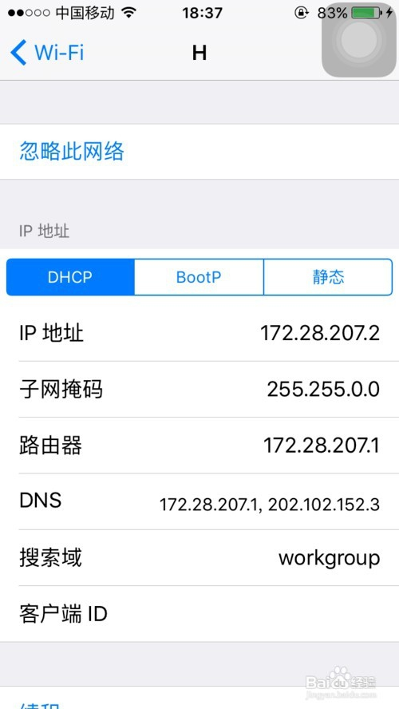

前言
用户使用协议（TOS）
一些准备工作
变色龙特点及对比
用户账户相关Q&A
功能使用相关Q&A
苹果系统连变色龙热点
安卓系统连变色龙热点
Windows系统连接变色龙热点
Published with GitBook
苹果系统连变色龙热点
苹果系统
第一步
、打开iphone苹果手机的系统设置(齿轮图标)，找到WIFI无线网络，确保手机已经连接到变色龙热点。
第二步、
找已经连接的无线名称“变色龙VPN热点”，点击>最右边>蓝色i圆圈，进入无线详情

第三步、
当前界面，下拉，找到HTTP代理，默认为关闭，点击，手动，变蓝色，填写代理服务器和端口，
服务器写 192.168.43.1 端口写 8787 ,不要按图上的写，图是我在网上随便找的。
第四步、
苹果手机没有保存按钮，点左上角蓝色<WI-FI 返回，代理就已经生效！
results matching "
"
No results matching "
"